Operational Maps Tutorials#
Maps play a central role in humanitarian work, helping teams understand needs, capacities, and conditions on the ground. This page brings together practical, scenario-focused tutorials that show how to create clear and effective operational maps in QGIS. Each example highlights techniques you can adapt to your own data and context, supporting better coordination and decision-making in the field.
Table of content#
Health Facility Capacity Map: Visualising with multi-variable point symbols#
A health facility capacity map is a practical and valuable tool for health preparedness and response. These maps help responders quickly identify the locations of health services, assess their capacity, and determine whether they are operational. In many situations, this information is crucial for making decisions about resource allocation, referral pathways, surge support, and identifying service gaps. The maps are typically based on datasets provided by governments or partner organizations. If official datasets are not available, OpenStreetMap can serve as a good starting point.
Health capacity maps usually combine multiple attributes into a single symbol by utilizing size, color, and different shapes.

Building a Multi-Variable Hospital Capacity Map Step by Step#
In this tutorial, you will learn how to create a multi-variable point map of hospitals in Malawi using QGIS. You will work with a modified version of the Malawi Master Health Facility Registry (with fictitious figures and hospital bed counts added for training purposes) and apply a combination of proportional symbol size, manual classification, and data-defined color overrides to effectively communicate both capacity and operational status at a glance.
About the Dataset#
The data used in this exercise comes from the Malawi Master Health Facility Registry (MHFR), the official national database of all health facilities in Malawi. Malawi - Health Facility Registry It exists to provide a single, up-to-date source of information for planning and monitoring health services.
⚠️ Note: For the purpose of this tutorial, the dataset has been manipulated.
Download the data folder here and save it on your PC. Unzip the .zip file.
Fields used in this tutorial#
Field |
Purpose in tutorial |
|---|---|
TYPE |
To extract hospitals from the full facilities dataset |
STATUS |
To map Functional vs Non-functional facilities using colour |
Number_Beds |
To represent hospital capacity using graduated symbol sizes |
LATITUDE & LONGITUDE |
To create point geometries in QGIS |
These fields are enough to build a clear, multi-variable point map.
Health Facilit Capacity Map Tutorial#
Data preparation#
First, we need to load the Malawi - Health Facility Registry dataset into QGIS
Import the Malawi health facilities CSV into QGIS.
Import the Malawi health facilities CSV into QGIS
In the top menu, go to
Layer → Add Layer → Add Delimited Text Layer…Next to the File name field, click the three dots

and browse to your Malawi health facilities CSV file and clickOpen.After selecting the file, QGIS will show a preview of the table.
Take a moment to review the columns:OWNERSHIPTYPESTATUSZONE,DISTRICTDATE OPENEDLATITUDE,LONGITUDENumber_Beds
These fields contain all information needed for the mapping exercise.
Under Geometry Definition:
Select Point coordinates.
Set X field =
LONGITUDE.Set Y field =
LATITUDE.Ensure the Geometry CRS is set to EPSG:4326 – WGS 84.
Click Add.
The layer will now appear in your Layers panel and the points will display on the map canvas.
{kind=link}
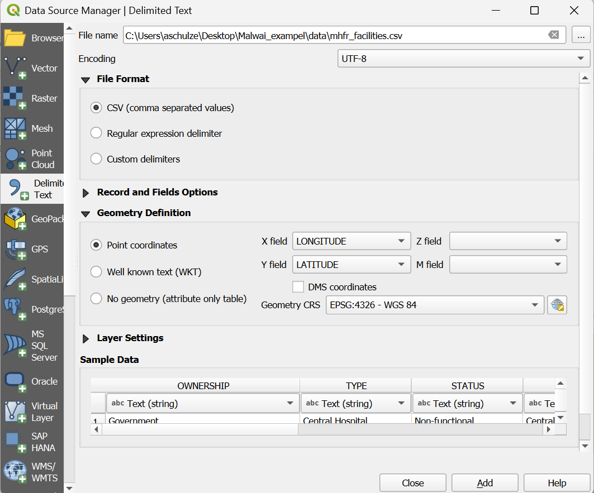
Next, we need to reduce the points visualised on the map to the facilities that actually have hospital beds. In this tutorial, these are Central Hospital, District Hospital, and Hospital.
Filter the dataset to see only hospitals (Video)
Filter the dataset to see only hospitals
Open the attribute table
Right-click
Malawi_health_facilities_raw→ Open Attribute Table.Look briefly at the key fields:
TYPE – identifies facility type. Hospitals usually appear as
Central Hospital,District Hospital, orHospital.STATUS – should contain
FunctionalorNon-functional.Number_Beds – mostly fill
Filter the dataset to include only hospitals
Right-click Malawi_health_facilities_raw → Filter…
Enter the expression:
"TYPE" IN ('Central Hospital', 'District Hospital', 'Hospital')
Click Test to check how many rows match, then OK.
QGIS will now hide all non-hospital facilities.
Your filtered layer now shows only hospital facilities.
Visualising the number of beds with proportional circle methods#
Now that your layer is filtered to show only hospitals, you can create a map that shows hospital capacity using proportional circles.
The number of beds (Number_Beds) will control the size of each symbol.
Visualise hospital capacity using proportional (graduated-size) circles (video)
Visualise hospital capacity using proportional circles (graduated-size)
Open the Layer Styling panel
Select your hospital layer (the filtered
Malawi_health_facilities_raw).Right-click the layer → Properties… → Symbology.
Change the renderer to Graduated
At the top of the Symbology window, change the style from Single Symbol to Graduated.
Select the attribute for symbol size
Under Value, choose
Number_Beds.
This is the field that will control the size of each circle.
Change the Method to “Size”
Next to Method, change the default (usually “Color”) to Size.
This turns the graduated classification into a proportional circle map.
Generate the classes
Click Classify.
QGIS will create size classes based on the range of bed numbers in your dataset.
Adjust the classes manually (recommended)
The data range is 1–200 beds, but only a few hospitals have more than 80 beds.
Most hospitals are small or medium-sized.
Automatic classification would cluster most facilities into one or two classes.
To avoid this, we create balanced, domain-informed classes:
Class |
Bed Range |
Meaning |
|---|---|---|
1 |
1–20 |
Very small hospitals |
2 |
21–40 |
Small hospitals |
3 |
41–60 |
Medium hospitals |
4 |
61–80 |
Large hospitals |
5 |
81–200 |
Very large / referral hospitals |
Adjust the Lower/Upper values for each class accordingly.
Note
Why these ranges?
Most hospitals fall in the 1–60 bed range → we break this into three meaningful groups.
Few hospitals exceed 80 beds, so the top class isolates the rare high-capacity referral facilities.
This ensures variation in symbol size is visible and not compressed into one tiny class. (See Graduated Classification)
The resulting map displays hospitals as circles of different sizes, each size representing one of the bed-capacity classes you defined earlier. This gives a quick visual impression of where smaller and larger hospitals are located. However, at this stage the map only shows capacity: it does not yet communicate whether a hospital is functional or non-functional.
Proportional circle map showing the number of beds
{kind=link}
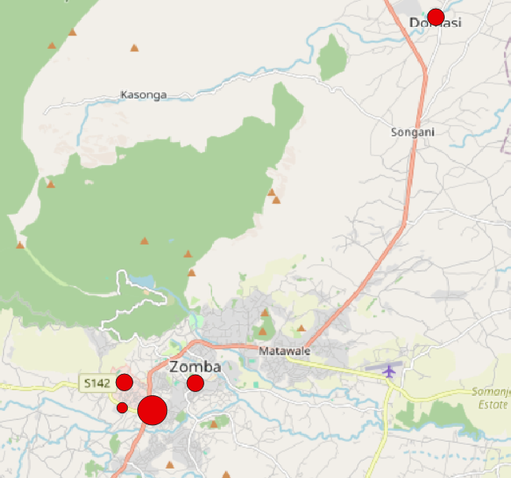
Proportional circles: beds#
Classes of proportional circle map
Smaller circles correspond to hospitals with few beds, while larger circles indicate facilities with higher capacity.
{kind=link}
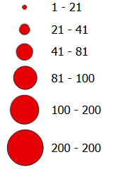
Proportional circles: beds classes#
Adding visualisation of operational status with colour#
To visualise the operational status of each hospital (operational or non-operational) alongside its bed capacity, we can use QGIS’s data-defined override functionality. A data-defined override allows you to control a symbol property—such as colour, size, rotation, or opacity—using an expression or an attribute value from the layer. This means QGIS adjusts the symbol automatically for each feature, based on the data rather than manual styling. Using this technique, we can assign a colour to each hospital according to its status while keeping the proportional circle sizes for bed capacity.
First, we need to open the data-defined override Expression Builder.
Open data-defined override to adjust colour based on operational status (Video)
Open data-defined override to adjust colour based on operational status
Select your hospital layer (the filtered
Malawi_health_facilities_raw).Right-click the layer → Properties… → Symbology.
Nex to
SymbolTab click on the dropdown menue, then click at the top click onConfigure Symbol.In the new window click on
Simpel Markerand then next tofill colouron thedata-defined overridesymbol
To make this work, we now need to tell QGIS which colour to use for each hospital. Data-defined overrides use the QGIS expression language, which lets you write short rules that are applied automatically to every feature in the layer. In this step, we will write a small expression that checks the value in the STATUS field and assigns the correct colour based on whether the hospital is functional or not.
Use an Expression to Colour Hospitals by Status (Video)
Use an Expression to Colour Hospitals by Status
This expression tells QGIS to automatically choose a colour for each hospital based on its
STATUSattribute.
Functional hospitals become green, non-functional ones become red, and any missing values receive a neutral grey. TheCASEstatement works like an “if–else” rule: QGIS checks the value in theSTATUSfield and assigns the corresponding RGB colour (RGB Color Picker), ensuring every point is styled consistently without manual editing. You can copy the complete code here:
CASE
WHEN "STATUS" = 'Functional' THEN color_rgb(0, 130, 0) -- green
WHEN "STATUS" = 'Non-functional' THEN color_rgb(190, 0, 0) -- red
ELSE color_rgb(150, 150, 150) -- fallback for missing/unknown
END
Or write the code yourself using the help of the functionality of the expression builder:
{kind=link}
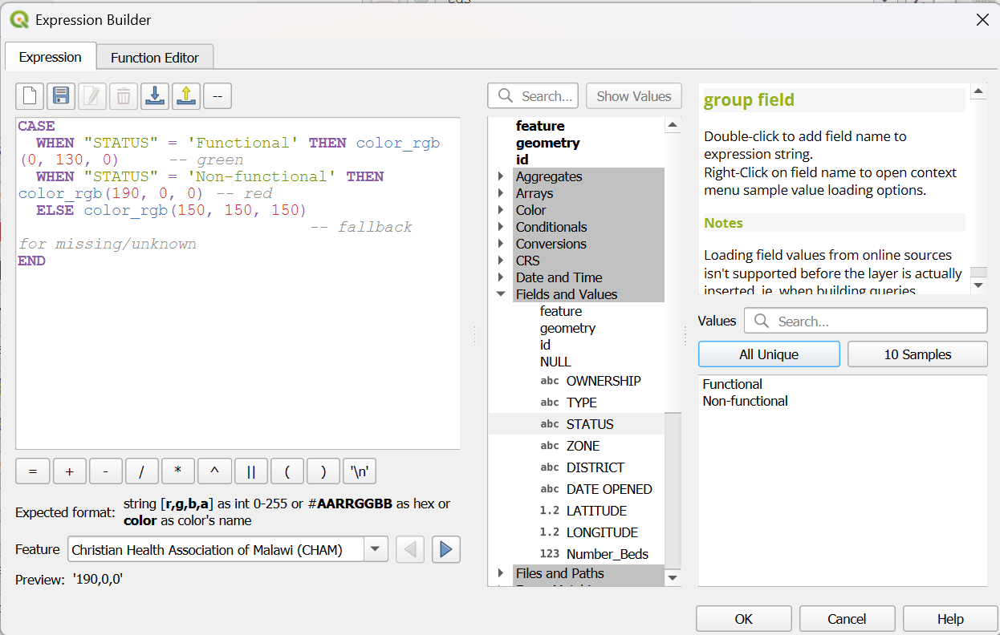
Expression in data-defined override Expression Builder#
Proportional circle map showing the number of beds AND operational status
{kind=link}
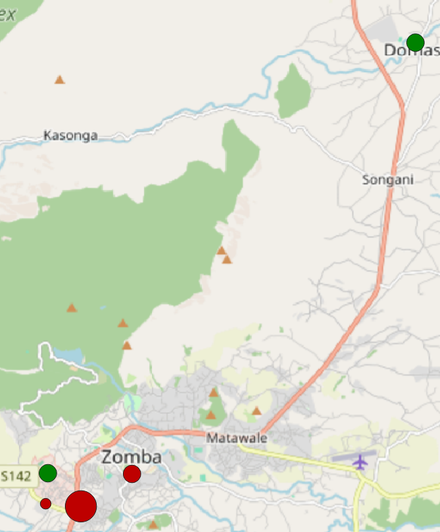
Proportional circles: beds + operational status#
Classes of proportional circle map This new visualisation shows the size of the circle, the number of beds, the colour (Green: Operational; Red: Non-Operation), and the operational status of the hospitals.
{kind=link}
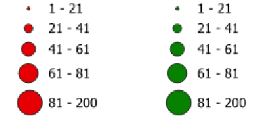
Legend proportional circles: beds + operational status#
Making the Legend Match Your Map#
⚠️ Note: When you use a data-defined override to colour your symbols, QGIS does not automatically update the legend.
To make sure your map readers understand the meaning of the colours, you need to customise the legend manually. Here are two practical ways to do this.
Option 1: Legend with helper layer
A straightforward workaround is to duplicate your hospital layer and use these copies solely as legend helpers. Rename the duplicate for easy identification and change its color in the visualization. Make sure to hide this layer in the map view.
In the Print layout, you can add this layer to the legend. This way, the legend will display the correct colors, while your original layer, which contains the data-defined overrides, will still be responsible for the actual map styling.
Option 2: Edit Legend Colours Directly in the Print Layout
Another option works only in the Print Layout. In the Legend, just add your hospital layer twice. The secound one, you can adjust the colour of each symbol directly in the Legend. Set each item to green. Using the option Start a new column before this term, you can place the two layers next to each other.
{kind=link}
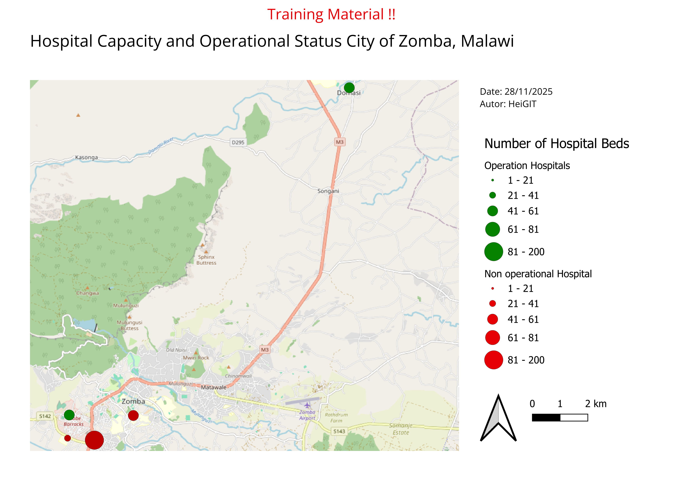
Exampel Map Proportional circles: Hospital Beds + Operational Status#
Adding a Third Variable Using Stroke Style (Facility Type)#
Your hospital capacity map now contains a rich amount of information, and it is already useful in its current form. However, QGIS allows us to add an additional layer of meaning without creating new layers or changing the existing size and colour logic. One way to do this is by using the stroke—the outline of each symbol—which can be styled or patterned dynamically. In the next section, you will learn how to use the stroke style to represent a third attribute, making your visualisation even more informative while keeping it easy to read.
Adding a Third Variable Using Stroke Style (Video)
Select your hospital layer (the filtered
Malawi_health_facilities_raw).Right-click the layer → Properties… → Symbology.
Nex to
SymbolTab click on the dropdown menue, then click at the top click onConfigure Symbol.In the new window click on
Simpel Markerand then on theYou will see:
Fill colour
Outline/stroke colourOutline widthStroke style← we will use this
Add a Data-Defined Override for Stroke Style
Next to
Stroke style, click the smalldata-defined overridesymbolChoose
Edit→ This opens the QGIS Expression Editor.
Write an Expression to Assign Stroke Styles for
TYPE
Here is an example that distinguishes three hospital categories using clear and readable stroke patterns:
CASE
WHEN "TYPE" = 'Central Hospital' THEN 'solid'
WHEN "TYPE" = 'District Hospital' THEN 'dash'
WHEN "TYPE" = 'Hospital' THEN 'dot'
ELSE 'solid'
END
QGIS applies the rule automatically to each feature.
How this works:
Central Hospital→ solid outlineDistrict Hospital→ dashed outlineHospital→ dotted outlineAll others→ solid (fallback)
By adding stroke styles to your symbols, the map now carries a third layer of information while keeping the overall design compact and readable. This works best when you limit stroke styles to just a few meaningful categories; using too many patterns will quickly make the map visually noisy. Make sure your legend clearly explains what each pattern represents, and avoid combining stroke style with additional outline colours unless it is absolutely necessary—too many variations can overwhelm the reader. With these principles in mind, your updated map should now communicate three attributes at once in a clear and balanced way.
{kind=link}
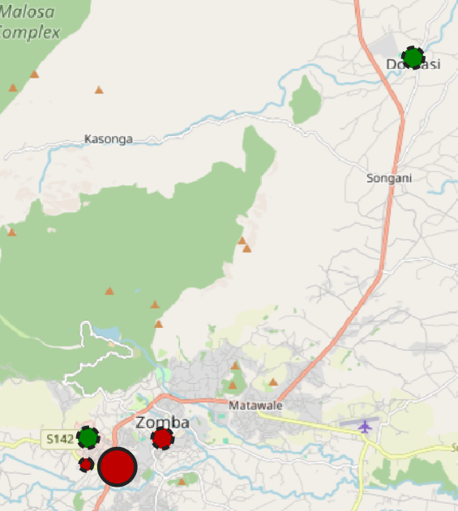
Proportional circles: beds + operational status + Owner status#
{kind=link}
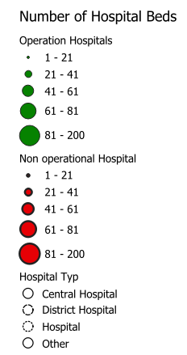
Legend Proportional circles: beds + operational status + Owner status#
With three visual variables now shown in a single symbol, it’s important that the legend reflects all of them clearly. QGIS does not automatically update legend entries when data-defined overrides or stroke styles are used, so a few extra steps are needed to ensure the legend matches what appears on your map. In the next section, you will learn simple ways to adjust the legend so that all size classes, colours, and stroke styles are represented accurately.
Legend with helper layer
A straightforward workaround is to duplicate your hospital layer and use the copy solely as legend helpers. Rename the duplicated layer so it’s easy to recognise in the legend. Use ‘categorised’ classification. Adjust the stroke style (solid, dashed, dotted) to match the categories you used in your map. Make sure to hide the helper layer in the map view so it doesn’t appear on the actual map.
In the Print layout, add the helper layer to the legend. This ensures the legend shows the correct stroke patterns, while your original layer—with its data-defined overrides—continues to control the real map symbology.
{kind=link}
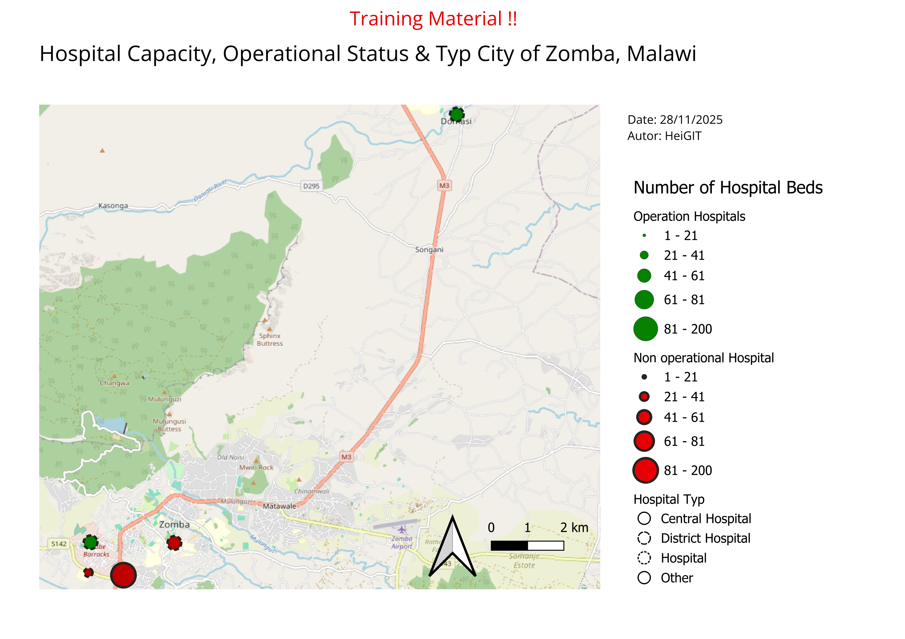
Exampel Map Proportional circles: Hospital Beds + Operational Status#
Creating a 3W Map (Who, What, Where)#
Introduction:
A 3W info map is one of the most commonly requested products during the first month of an operation. 3W refers to who, what, and where, meaning which organizations and National Societies are involved in the disaster response, what activities they are carrying out, and where those activities are taking place. The 3W is typically updated regularly as additional actors join the operation and expand their sectoral work in affected locations. You’ll commonly find 3Ws included in SitReps and operational documents, shared on the GO Platform, and discussed during Joint Task Force meetings. In this section we will discuss the essential elements of a 3W map and how to create one using QGIS.
{kind=link}
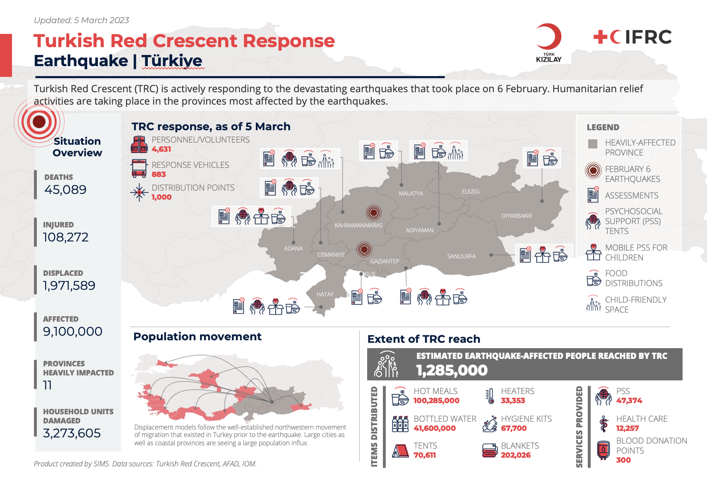
3W Map example: Turkish Red Crescent Response to Earthquake#
Example: 3W Brazil Floods Distribution Map
{kind=link}
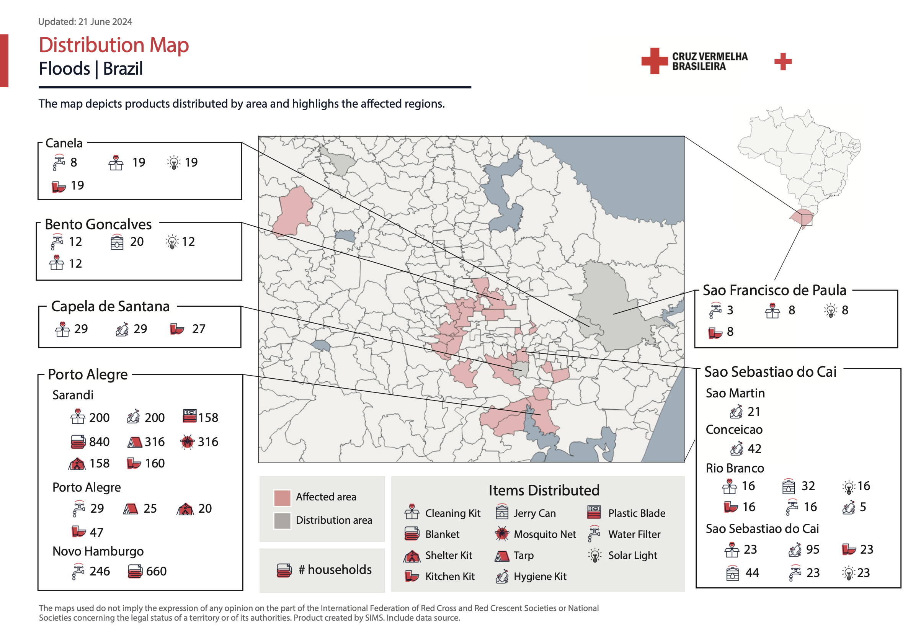
3W Map example: Brazil Floods Distribution Map#
What is needed:
A recent version of QGIS
Access to 3W data
IFRC icons for map making
Logos of the organizations involved
Getting the 3W data:
A variety of factors can affect how much 3W information you have available. In the early weeks of a response, there may not yet be a structured process for gathering data from the different sectors and organizations involved. The IM Coordinator may recommend using a simple survey for sector leads and/or National Societies to capture an initial snapshot of who is doing what and where. As the operation becomes more organized, sector leads and National Societies can begin entering 3W data directly into a joined platform, which then can be used as the primary source for the 3W map.
If no formal 3W data collection system is in place, information might need to be extracted from SitReps and other reports produced by the operation team. Focus first on identifying the following:
What response activities are the National Society involved in, and where?
What response activities are being done by IFRC operation, and where?
Key situation overview figures, such as number of people affected by the disaster, number of deaths or injuries, number of houses damaged, number of geographical units affected (all of these data points can be modified based on the context of the disaster).
Make sure to note the data source you are using for key situation overview figures, and whenever possible to align the figures you are using to those used by the host National Society instead of using figures released by the media.
How many people or households are being reached by sectoral activities, and where?
It is normal that the initial dataset is limited. The 3W map will evolve and expand as additional information comes in.
Example: Hurricane Melissa November 2025 | Jamaica
The two 3W example maps below demonstrate how such products develop as new information becomes available. The first map, produced at the beginning of November by a single organization (MapAction), contains limited data and represents an initial community assessment. Three weeks later, the second map created jointly by MapAction and OCHA, includes significantly more information. In addition to expanded data, the map’s styling has also evolved. This progression is entirely normal; maps are expected to improve and become more detailed over time. What matters most is establishing an initial version that can be updated and refined as the response advances.
{kind=link}
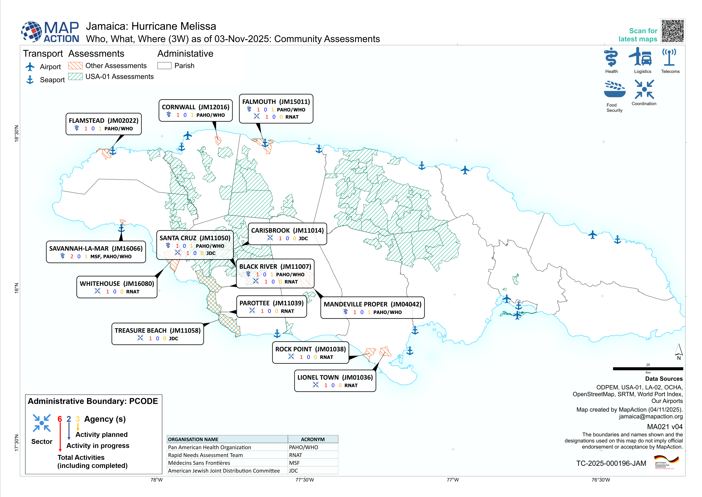
Jamaica: Hurricane Melissa - Who, What, Where (3W) as of 03-Nov-2025: Community Assessments (Source: MapAction).#
{kind=link}
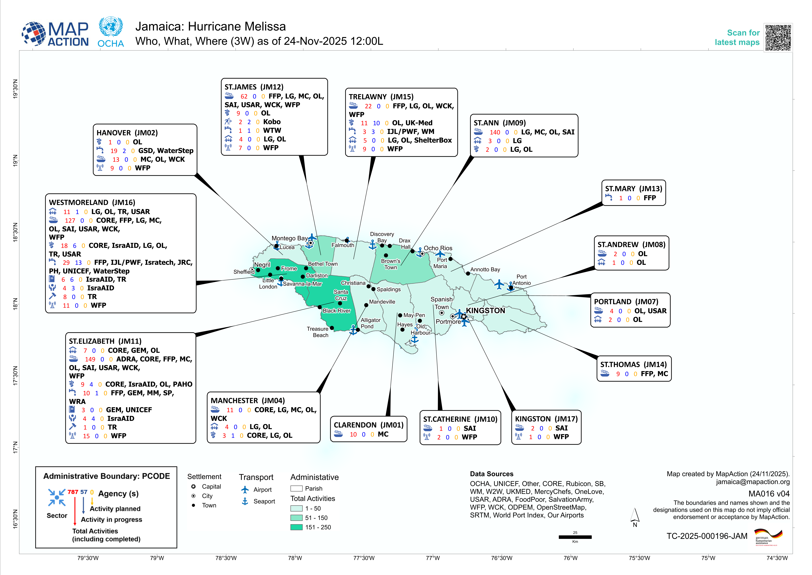
Jamaica: Hurricane Melissa - Who, What, Where (3W) as of 24-Nov-2025 12:00L (Sources: MapAction, OCHA).#
3W Map Creation#
Add all the relevant spatial data. Used in probably every instance:
Administrative boundaries
Affected areas with the relevant disaster
Points of Interest (Airports, Ports, Cities)
Background map (OpenStreetMap is always a solid choice)
Import the 3W Activity data
Add the 3W dataset to QGIS (mostly CSV or Excel)
Ensure that it contains information about the organization, activity type, and location.
How to import .csv or .txt
Delimited text import (.csv, .txt)
When working with 3W data, the most common format encountered is a delimited text file, such as .csv files (Comma Separated Values). These files contain tabular data, which can be opened by programs such as Microsoft Excel. They can contain geographical or positional information as point coordinates in separated columns (for example, latitude and longitude, or x- and y-coordinates), or as “Well Known Text” (WKT), which represents complex geometries, such as polygons or lines. In some cases, the table may not include any geographic information at all. When this happens, the file is simply added as a non-spatial table, allowing access to its attribute information without displaying it on the map.
Open Delimited Text Layer
Tip
To load data from spreadsheets such as Comma Separated Value (.csv) or Excel (.xlsx), the datasets need to have columns containing geometry - this is most often in the form of latitude (Y field) and longitude (X field), but might also be in other formats, such as WKT. In this case, you can also have complex geometries in your delimited text file.

Import delimited text in QGIS 3.36.#
Layer->Add Layer->Open Delimited Text Layer.Click on
File nameclick on the three points and navigate to your CSV file and click Open.File Format: Here you can specify which delimiter is used in the file you want to import. In a standard CSV file, commas,are used. If this is not the case, selectCustom delimiters. Here you can choose the exact delimiter used in your file.
Tip
To find out which delimiter is used you can open your .csv file in Notepad or Excel. There you can check which delimiter is used to separate the information.
{kind=link}
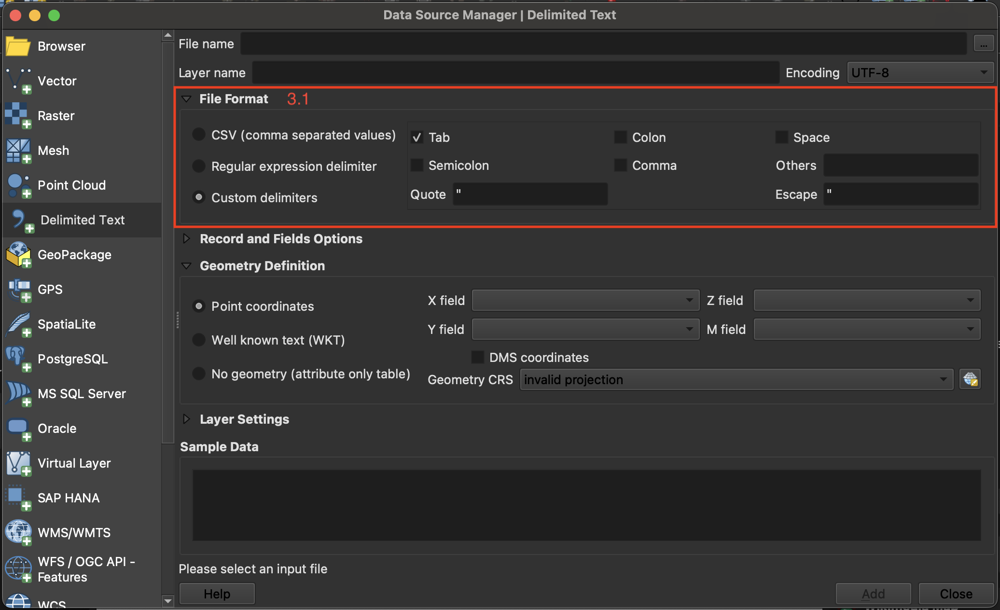
Adjusting the file format parameters while importing a delimited text layer into QGIS.#
If your CSV file contains geometry, continue with
Geometry definition: In this section, you specify which columns of the file contain the spatial information to georeference the data on the map. If the file has a column containing latitude and another with longitude data, you can use them to georeferenced the data. CheckPoint Coordinatesif the.csv-file contains point data. Select forX field“LONGITUDE” and forY field“LATITUDE”.Under
Geometry CRSselect the coordinate reference system (CRS). By default, QGIS will select the CRS of the project. If the file does not have spatial information choose the optionNo geometry (attribute only table).Click
Add
Video: Opening delimited text files in QGIS
Style the administrative boundaries with a transparent fill and choose an appropriate
Stroke colorandStroke widthto ensure they are clearly visible without obscuring underlying map content.
Styling administrative boundaries
Styling administrative boundaries (Polygons)
When creating 3W maps, administrative boundaries are always a key component. Most overview maps display disaster-related information aggregated by these boundaries. To visualize multiple administrative levels at once, each layer needs to be styled so that lower layers remain visible and the hierarchy between levels is clear. Often, this begins with adding the country outline and then progressively adding each subsequent administrative level, ensuring that the symbology distinguishes them without cluttering the map.
Only display the outlines of polygons
Now, we want to change the symbology of a layer so that only the outlines of the polygons are visible. This is necessary to make layers below this one visible.
To change the symbology of a single layer:
Open the
Styling paneland navigate to the symbology tab. By default, the symbology will be set toSingle Symbol. This means that the same colors and contours will be applied to all the features in that layer.Click on
Simple Fill.Click on the arrow to the right of
Fill Color.Check the
Transparent Filloption.

Video: Making the fill color transparent
Adjusting the Styles of Multiple Overlaying Layers
Ordering the layers
Import all the administrative boundaries into your QGIS-project that you want to work with (e.g. Admin 0-2).
One option is to order the layers in the Layers panel so that the
Admin0-layer sits on top, followed byAdmin1andAdmin2. At first, this might look weird becauseAdmin0will cover everything.

Order the layers and navigate to the styling panel of the topmost layer#
Change the symbology of the
Admin0layer by opening the styling panel and navigating to the Symbology tab.Click on
Simple Fillto open the style options.Expand the
Fill Colormenu and check theTransparent Filloption. This will make only the boundaries visible, so we will be able to see the layer under this one.Choose a
Stroke Color, and adjust theStroke Width.Click OK.
Repeat the same process for the
Admin1layer, using the same color as forAdmin0(it will be in “Recent colors). Adjust the stroke width so that it differs fromAdmin0, ensuring that the administrative levels remain visually distinct.Now we can see the boundaries of the country and its states, and behind that we can see the districts (
Admin2).Let’s make the district layer’s style consistent with the others.
Choose a
Fill Color.Use the same
Stroke Coloras forAdmin0andAdmin1, but make the width even thiner and the Stroke Style a Dash Line.Click OK and look at your map: hopefully it’s starting to look nicer!

The styling of a vector data consists of the color and the outline.#
Video: Adjusting the style for multiple layers
Style the disaster-related information by selecting a color ramp that fits the context. One common approach is to create a choropleth map using Graduated styling, which visually represents variations in impact or case numbers across administrative areas.
Styling disaster-related information
Creating a Choropleth Map (“Gradudated Styling)
If a layer contains numeric values that are continuous, they can be organized in intervals. These intervals can be displayed in graduated colors. In this example, colors are assigned to Admin1 polygons based on the total population of each State.
Open the
Symbologyoptions and chooseGraduated.Select the value you want to use to assign colors, in this case, it will be
total_pop.

With variable ranges, select Graduated symbology and choose the attribute with continuous values#
Click on
Classifyto list all values divided in classes.Choose how many classes you want the data to be divided into ‒ let’s say 4. You can also assign different
Modes. We usually work withEqual CountorEqual Intervaldepending on our data.By default, the color ramp will be red. However, red is not the right color to use for population count, as it is generally used to communicate negative elements, such as food insecurity or cholera cases.
Click on the arrow next to the color ramp to choose another combination of colors - let’s say a color ramp from white to blue.
Click
Applyto preview the look of your layer, thenOK.

You can categorize the continuous values into classes and assign a color ramp .#
The following map shows the most populated states of Nigeria using a graduated color categorization. These types of maps are called Choropleth maps.

A map showing the population of Nigerian states.#
Video: How to create a choropleth map
Add labels to the Admin boundaries (at the level of interest) for clearer identification.
Label administrative boundaries
Single Labels
Creates a single label style for every feature in the layer. You can select an attribute (value) which will be displayed. For example, the name of a district. You need to know which attribute displays the information you want to display. Look at the attribute table of the dataset to find it out.

Single labels for each administrative region (adm1) in Nigeria. The reader is able to assign each label to the respective administrative entity.#

Assigning the correct attribute value in the labeling options. QGIS needs to know which attribute (column) of the attribute table should be displayed as a label. In this case, we want the name of the administrative region (ADM1_EN) to be displayed.#
Adding Single Labels to a Layer
In the styling panel, click on the
Labels-tab underneath the Symbology tab.Select
Single labels.Valueis where you choose the attribute that will be displayed as a label. For exampleADM1_ENwill display the English names of Nigerian states for each feature in the data set.Let’s change the font: Open the font dropdown menu and select Arial. Make the text
Boldin the Style dropdown menu. Change the color by clicking onColor, and change theSizeto 8 pt.Let’s add a white buffer around the label. In the
Labelstab, you will find a list with different options to style the labels. Right now, we are in theTextmenu. SelectBufferand check theDraw text bufferoption. This will make the labels stand out more on dark or crowded maps.Click
ApplyandOK.

Setting up labels in QGIS 30.30.2#
Video: How to add single labels
Attention
Single Labels are not always useful. For example, if the dataset is too big, or you only want to display certain features in the dataset. In the example below, there are too many settlements to display labels for each settlement. Instead, it might be useful to only display the regional and national capitals. For such a use case, Rule-based Labeling is ideal.

Single Labels were selected to display the names of the settlements (red dots). A map with so much text information is unreadable and the information can hardly be understood.#
Set up a new Print Layout.
Add a new map by clicking on the

Add map-button.Position the main map frame at the center of the page and size it generously so that place names, symbols, and activity markers are easy to read.
Add a header using the

Add Label-tool. It should contain the following information:The title (e.g. Sudanese Red Crescent Response)
The type of disaster or emergency
The geographic location of the disaster
The last updated date to indicate the currency of the data. Because operations evolve quickly, the date is especially important for users who need to understand how recent the information is.
Add Organizational logos (e.g., International Medical Corps, Relief International, International Rescue Committee) using the

Add image-tool to ensure that each active organization can be easily identified on the map.Icons which describe the specific activity. These can also be added using the
Add image-tool. Make use of the IFRC icons for map making.A small overview map to help situate the disaster-affected area within a broader geographic context.
Note
Multiple text boxes can be used to display the header in different font sizes, helping to clearly separate different layers of information. If all content should remain within a single label box, Render as HTML can be applied to format and style the text as needed.
Starting the Print Layout
Open the Print Layout
Go to Project > New Print Layout > enter a name for the new print layout > click OK
A new window with a blank print layout will appear.

Create a new Print Layout#
Map Composition
A good map guides the reader in understanding the information available on the map, makes the information easily accessible, and is not overloaded with information.
In general, there are a few things to keep in mind when creating a map:
The main map should cover the largest portion of the page and be centred.
A complete map must have:
A meaningful title
All the sources used
A legend
 explaining symbols and color schemes.
explaining symbols and color schemes.A scale bar
A north arrow
and necessary other information to contextualize the information presented on the map.
This additional information, such as the title should be scaled accordingly.
Titles should be large so the reader can identify it as the main topic of the map.
Additional information should be smaller and moved out of the main focus of the page (e.g. at the bottom, to the sides, or in the corners).
A well-structured page layout helps the reader discern the different information on the map and makes it easier to know where to look for certain information. Frames and boxes can structure the page layout. For example, a legend can be put on the bottom or to the right of the map.
Areas of operation for each organization
Place the logos of each organization within the districts where they are active.
Add activity icons to indicate the specific types of work each organization is carrying out in those districts.
To illustrate the link between organization logos, activity icons, and their corresponding areas, arrows can be added to the map. Using this feature helps clearly emphasize the relationships and improves overall readability.
How to add arrow item
The arrows  can be added from the left-side panel in the Print Layout. Click and drag on the layout to draw it, then use the Item Properties panel to adjust the arrow’s style, thickness, color, and direction. Arrows can be moved or resized like any other layout item, allowing you to visually connect map features, icons, or labels.
can be added from the left-side panel in the Print Layout. Click and drag on the layout to draw it, then use the Item Properties panel to adjust the arrow’s style, thickness, color, and direction. Arrows can be moved or resized like any other layout item, allowing you to visually connect map features, icons, or labels.
Caution
Add labels and logos where needed, but avoid cluttering the map with unnecessary text or symbols. Organize map elements by topic, importance, and visual hierarchy to keep the layout clean and structured. Items can be reordered in the Item panel on the upper right side. Once added as images, logos and activity icons can be positioned directly on the map using drag-and-drop. Place them in meaningful locations so they do not overlap or obscure other important information.
Note
All the necessary information about the Print Layout Composer can be found here

A simple example of a 3W map showing the distribution of Oral Rehydration Points and the active organizations operating in south-eastern Sudan.#